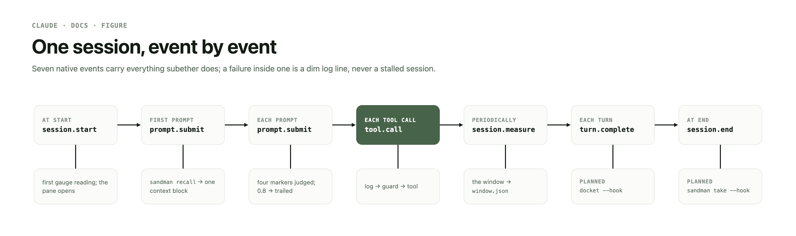
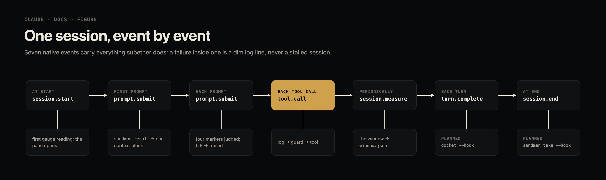
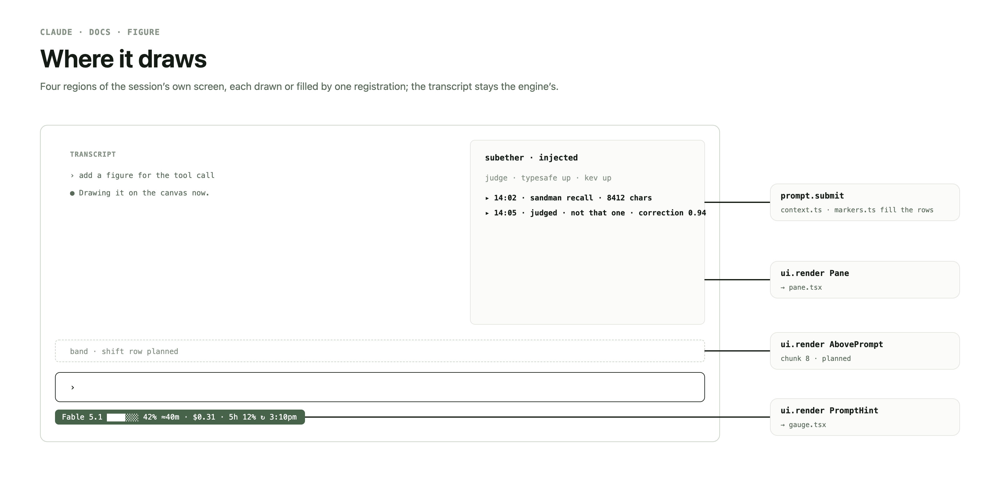
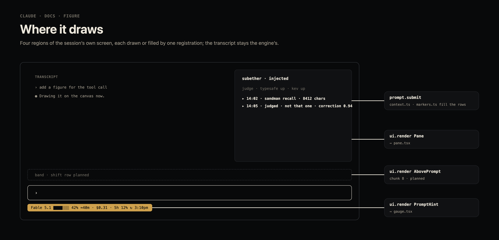
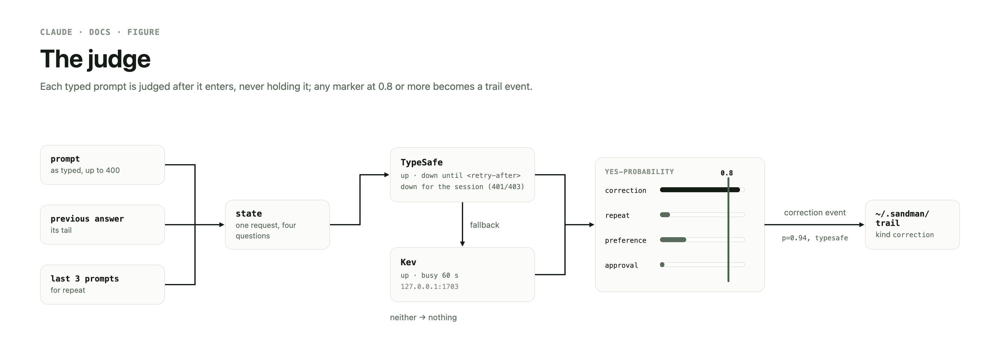
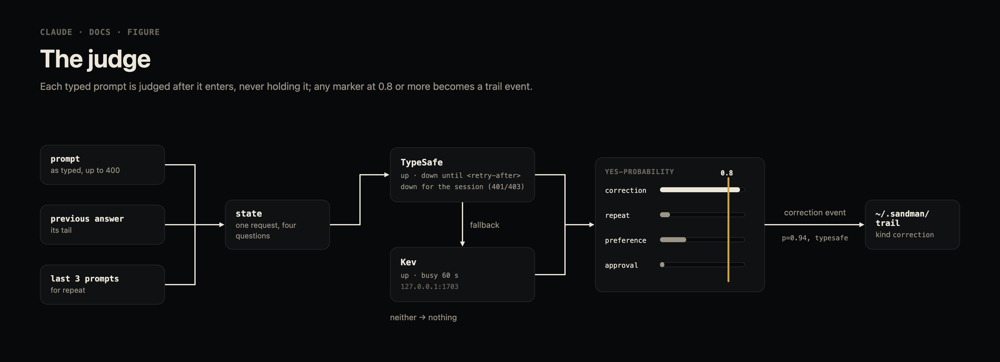
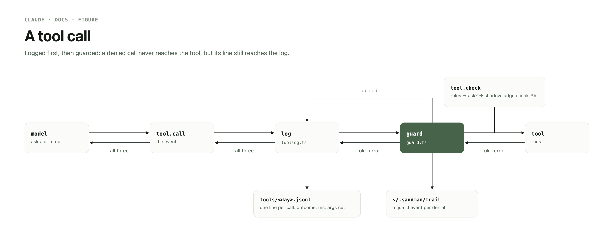
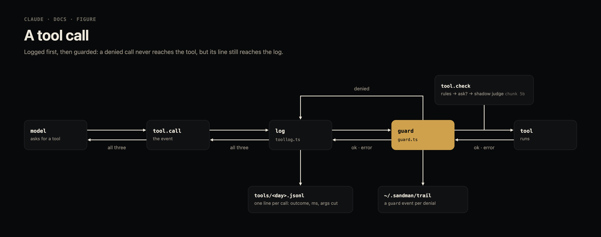
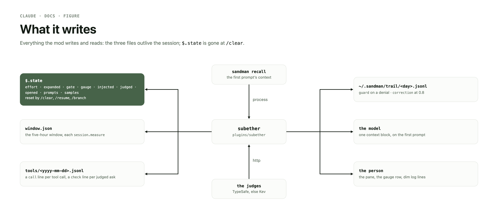
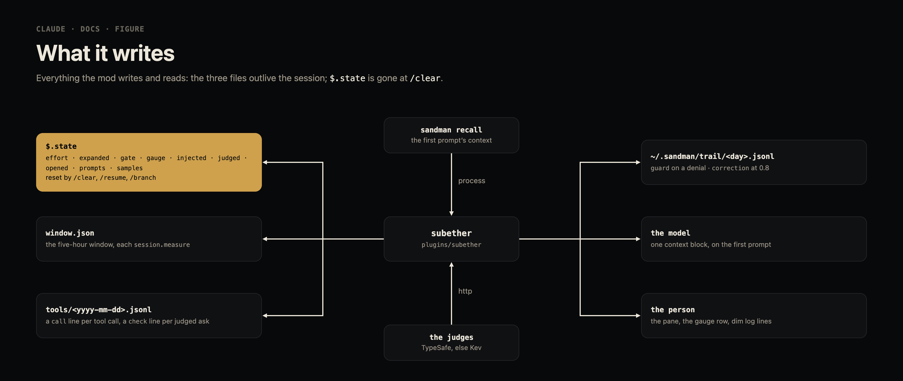

the harness's Claude Code mod
subether is the from-scratch successor of
perpetual, built on native mod events: the gauge row under the prompt,
the injected pane, the Bash and .yml guards, the daily tool log, the System
One judged markers and the shadow check are live; the subagent pin, docket, the session-end take and
the shift band are to come. Its contract is
plugins/subether/README.md;
this page is the design and what is open.
Why a rewrite
perpetual ran settings hooks from inside a mod; subether uses the events a mod is built on.
A mod is a
plugin whose TypeScript handlers run inside Claude Code on its own events — a tool call, a
submitted prompt, a part of the interface being drawn — and can watch, change or answer them.
perpetual hung its work on the classic.* events, the settings-hook
events relayed to a mod, and returned additionalContext the way a
command hook does. Where Claude Code's built-in guard loads (managed settings, or a Team or
Enterprise login), an installed mod's classic.* hooks never run, so
that design goes dark exactly where it is most needed.
- native first — every hook is on a native event; the one exception is
classic.Notification, since no native notification event exists. - the stand-in — no native event injects at session start, so the first
prompt.submitattaches itscontextblock instead (pane). - dropped — the
classic.SessionStart,UserPromptSubmit,StopandSessionEndshims;additionalContextreplies; module-level mutable state, now$.stateatoms (state); and the Ruststatuslinecrate, folded into the gauge and retired 2026-11-05.
Install
Loaded from the worktree until cutover; installed from the repo's marketplace after.
- today — the live
settings.jsonsetsenv.CLAUDE_CODE_PLUGIN_DIRSto theperpetual/rewriteworktree'splugins/subether, which loads in place as--plugin-dirdoes, so an edit reaches the next session or/reload-pluginswith no version bump. - at cutover —
claude plugin install subether@jgeschwendtfrom the marketplace (.claude-plugin/marketplace.json), then theCLAUDE_CODE_PLUGIN_DIRSentry is dropped. A relative-path plugin of a marketplace added from a local path loads in place too (Claude Code 2.1.318 docs), so noversionbump per change; check itsinstallPaththen. Until cutovermise run link's mod check is broken on this branch: it still readsplugins/perpetual. - perpetual is gone — uninstalled 2026-11-06 (owner: "make sure we are no
longer running perpetual too, remove the plugin definition to be safe"): its
enabledPluginsrow and cache removed. Until chunks 5–8 land there is no docket hook, nosandman takeat session end and no shift band.
claude plugin validate plugins/subether --strict claude plugin test plugins/subether
Events
What plugins/subether/hooks/register.tsx wires; a planned row is a pass-through stub until its chunk lands.


| event | matcher | does | status |
|---|---|---|---|
agent.spawn | — | pin a spawn with no model, not a fork, under a premium parent (fable/mythos) to opus, one log line | live |
classic.Notification | agent_needs_input, idle_prompt, permission_prompt | docket --hook with e | chunk 6 |
command.run | subether | open the injected pane | live |
prompt.submit | — | first prompt: sandman recall as one capped context block | live |
| per-prompt docket digest; the other first-prompt sources | chunks 6, 7 | ||
composer | the System One markers, unawaited; each at 0.8 trailed | live | |
session.end | — | sandman take --hook on every reason under the 1.5 s bound (sandman declines resume and a live --bg job's session itself); chunk 6 · the session's docket resolve beside it | live; chunk 6 |
session.measure | — | the gauge reading; the five-hour window → window.json | live |
session.start | — | the gauge's first reading and 15 s poll; later the band's commands and timer | live · chunk 8 |
isInteractive | open the pane unasked, register /subether | live | |
tool.call | — | the daily tool log; registered first, so outermost | live |
Bash | the Bash guard | live | |
Edit, Write | deny a .yml path | live | |
tool.check | — | the shadow check: core's decision unchanged, an asked call judged beside it | live |
turn.step | — | the gauge's effort flag | live |
turn.complete | main loop | docket --hook with a synthesized Stop payload | chunk 6 |
ui.render | PromptHint | the gauge row | live |
Pane | the injected pane's body | live | |
AbovePrompt | the shift row | chunk 8 |
Every binary runs from ~/.local/bin and never
raises: a failure is one dim log line
(plugins/subether/hooks/sandman.ts).
A session
One session from session.start to session.end: each moment's event, the hook it reaches and what that writes, the judge's four probabilities, and the trail event a judged prompt or a guarded call leaves. The session is invented; each moment's hook, effects, markers and threshold are checked against the hook graph and the code's constants by the gate.
Gauge
The row under the prompt, in the hint line's place, the engine's hint kept beneath: plugins/subether/hooks/gauge.tsx.
Fable 5 (low) ██████████▎░░░░░░░░░░░ 52% ≈46m · $1.20 · 5h 31%† ↻ 10:50pm
- the row — model, the main loop's last
turn.stepeffort, an ⅛-block bar againstautoCompactThreshold(else the window) toned at 50/75/90, an ETA from 15 s token samples, session cost, the five-hour limit with its local reset,†past 200k tokens. Each segment only with its data; the bar takes the columns the rest leaves, less a 4-column margin. - the reading —
session.measureand, in interactive sessions, a 15 s$.session.usage()poll; until the first reading the row yields to the engine's hint. - the window clock — each reading with a five-hour window writes
window.json($CLAUDE_WINDOW_FILE, else$XDG_STATE_HOME/claude/window.json) forsandman shift clock, through a temp file moved into place: only a window resetting within 6 h, never behind the stored live one, a percentage outside 0–100 logged and not written.
Injected pane
What subether added for Claude, shown in the right pane
subether · injected:
plugins/subether/hooks/context.ts
attaches,
plugins/subether/hooks/pane.tsx
draws.


- the stand-in — the first
prompt.submitthat is notisMeta(and the first after/clear) runssandman recall --hook(10 s) and attaches the reply as onecontextblock, capped at 10,000 characters, cut at a line break and the cut named. Tried once; a failure attaches nothing, and the prompt always goes through. - the rows — newest first, each collapsed to
▸ <hh:mm> · sandman recall · <chars> chars[, cut](or· failed); a press expands it over its text or error. - opening — unasked at an interactive session's start, placed from 144
columns;
/subetheropens it at any width, mid-turn too. - the judge line — first, dim:
judge · typesafe up · kev up, or a judge down until a time or for the session, with why (markers). Beneath the injected rows, a row per judged prompt (the newest 20), its likeliest marker and probability, expanding to all four and the judge's tokens.
Markers
Live:
plugins/subether/hooks/markers.ts
on prompt.submit, the client
plugins/subether/hooks/judge.ts.
A System One judge replaces perpetual's regex correction capture.


Owner, 2026-11-06: "lets only classify sessions when we have tokens available in the typesafe api or local classification model … fan out and detect markers to add to the trail"; "drop the regex, typesafe first, 0.8, build it".
- one request per composer prompt — TypeSafe
POST /v1/systemonefirst, the local Kev at127.0.0.1:1703as fallback, nothing when both are down. - four questions — correction, repeat, preference, approval, each a yes-probability over the previous answer's tail and the prompt (plus the last prompts, for repeat).
- 0.8 — at or above it, a
correctiontrail event, its rationale prefixedrepeated instruction:,preference:orapproval:for the other three; sandman's kinds stay as they are. - a learned gate — a free
GET /v1/modelsat start; 429/529 marks a backend down for its retry-after, 401/403 for the session, a Kev timeout busy for 60 s. Its state shows in the pane. - check — the same judge shadows auto mode's classifier
(plugins/subether/hooks/check.ts,
on
tool.check): core's decision is returned unchanged, and eachaskon a real call the tool does not report read-only is judged unawaited ondestructive,outbound,secretsandroutine, the answer acheckline in the tool log joined to the call's. Shadow only, until a week of lines sets the thresholds at which it answersallowordenyitself.
Guards
The house rules on tool.call:
plugins/subether/hooks/guard.ts,
perpetual 0.2.12's tokenizer and judges ported to typed TypeScript, logic unchanged.


- denied —
pkill -f, tree discards,git reset --hard, force pushes,git stash,git clean, and an Edit/Write to a*.ymlpath, withsubether: <house rule>.as the reason; the full table is the README's. - read as Bash reads it — quotes removed; each
$(…), backtick,sh -c,evalstring andfind -execa command of its own; argv read past assignments, keywords and wrappers (sudo,env,mise x, …). Quoted text never trips it; quoting never hides a command. Against perpetual 0.2.12, 274 table rows and 300,000 fuzzed lines differ in no outcome. - fail closed — a command nested past 16 levels or 64 groups, or one it cannot
read, is denied as unreadable; a hook that throws or times out before passing the call on denies
it through its
.catch. - trailed — each denial first runs
sandman trail append --kind guard --rationale "<rule>: <first 200 chars>" --ref session:<id>(plus--shiftwhen set), 5 s; a failed trail is one dim log line and the call is still denied. - not seen — a saved alias, variable indirection, arguments fed from a pipe,
env -S, package runners.
Tool log
One JSON line per tool call, one file per day: plugins/subether/hooks/toollog.ts.
- where —
~/.local/state/subether/tools/<yyyy-mm-dd>.jsonl($CLAUDE_TOOL_LOG_DIR, else$XDG_STATE_HOME/subether/tools), the day local to the call's start. - what — every call, built-in and MCP, main loop and subagents, denials
included: when, session, agent, cwd, tool, id, duration, outcome
(
denied/error/ok), the size of what the model read, Bash's flags, and the arguments; the key order is the README's. - the cut — every string argument cut at 2,000 characters with
…[cut <n> chars]. Never result content. - how — appended after the call settles through
cat >>(O_APPEND, so sessions' lines land whole), not awaited; a failed append is one dim log line.
State
No module-level mutable state: every value lives in a
$.state atom under subether, typed in
plugins/subether/types/index.d.ts.


- in use —
effort(the gauge's flag),expanded(the pane's open rows),gate(each judge's availability),gauge(the last usage reading),injected(the attached blocks, failures too),judged(the newest 20 judged prompts),opened(whether a composer prompt was seen, to tell a--bgbrief apart),prompts(the last 3 judged heads, for the repeat question),samples(the token trend for the ETA). - declared, planned —
lastandshift(the band, chunk 8),seen(the docket threads the per-prompt digest has shown, chunk 7). - reset —
/clear,/resumeand/branchreset every atom to its default: the next prompt recalls again, the pane empties and the gauge waits for its next reading.
$.state atom against the hooks that read or write it, what resets it and whether it is live. Data: docs/data/hooks.json, checked by the gate.Gate
One gate, run locally by hk and remotely by CI.
bun run test
(scripts/test.ts)
runs every step at once — the chart data against the source
(scripts/charts.ts:
the hooks, atoms, the call machine's writes and judge constants, the session's moments, and the public samples' keys), fmt check,
oxlint, tsc at the root and in the mod, the unit tests,
monitor-github's selftest, claude plugin validate --strict and
claude plugin test — and prints a step's output only when it fails.
- hk
(hk.pkl) —
pre-commit checks fmt and oxlint, check-only; pre-push runs
bun run test, thenstele checkandstele emit --check. - CI
(.github/workflows/ci.yaml)
— the
checkjob, the required check: the claude CLI pinned,bun run test, then the stele gate; neverstele build, the lock's sole writer.
Plan
Chunks
The only plan, in order; each chunk is one branch state the owner reads before the next starts (owner, 2026-11-05: "i want smaller chunks of work"). A landing that changes it edits it here.
- ✔ 2026-11-05 Scaffold: 0.5.0, every event a pass-through stub, a test each.
- ✔ 2026-11-05 Gauge (owner: "lets fold it in now"; "drop the cargo statusline
and switch over to the mod now"): the Rust statusline folded into the mod, the crate and
statusLineretired; moved under the prompt 2026-11-06 (owner: "docs show it can be rendered below like before"). - ✔ 2026-11-05 Tooling (owner: "do this but parallel where possible"): the gate.
- ✔ 2026-11-06 Context stand-in and pane (owner: "lets use this standin and add the right panel, have it show a message that gets injected. we start here"); rows collapsed by default.
- ✔ 2026-11-06 Guard and tool log (owner: "lets do the next bit the tool calls … i also want every tool call logged to a file, one log per day").
- Sandman: ✔ 2026-11-06 the System One markers
(owner: "we will abandon the dowse work for this path"); ✔ 2026-11-06 the
agent.spawnpin under a premium parent andsession.end→sandman take --hook; still to come: the context cap'sguardtrail. - ✔ 2026-11-06 Shadow check (owner: "i'd rather use my typesafe tokens for automode than my anthropic ones, lets shadow so we can shift spend to my typesafe subscription"): the check.
- Docket: digest, dead-session sweep, synthesized Stop, Notification and UserPromptSubmit payloads, the session's resolve at end.
- Context: the other first-prompt sources (report, docket digest, sweep) and the per-prompt changed-threads digest, capped 2,500.
- Band: the shift row above the prompt — atoms, 15 s timer,
AbovePromptrender,/docket/shift/trail. - README and cutover: below.
Cutover
mise run link(.mise/tasks/link) still readsplugins/perpetual, so it is broken on this branch; point it at subether.- AGENTS "Working here", and this repo's design page sections for the mod and marketplace.
- The README behaviour table brought level with the tree; the version bumped.
settings.json:enabledPluginsgainssubether@jgeschwendt;env.CLAUDE_CODE_PLUGIN_DIRSdropped.- The PR, then
claude plugin install subether@jgeschwendt— owner's step.